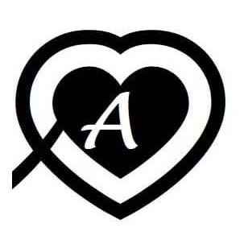
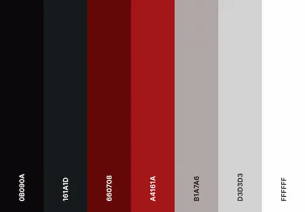

Content
Site Name:
The name for this site is Ailed Recipes. I chose that name because it is almost the same that my YouTube Channel's name. Ailed is my alias on internet and recetas y detalles are Spanish words that means recipes and details in English that represents the content in the channel.
Site Purpose:
This site will allow the user learn step by step how to prepare delicious recipes. In this site the user will find photos and the complete recipe of differents dishes and desserts. Also the website will offers links to my YouTube channel explaining some of the recipes in video. The website will have the advantage that the user will be able to find more differents recipes than in my YouTube channel. Also they will have the opportunity to tell me by a comment or suggestion what recipes they are interested and what they would like it to be recored in a video.
Scenarios
Two scenarios are provided for this web site in the home page. The first one answer the question that maybe could ask the user, and it is: What should I cook today? To answer that question, I will create a section in the home page that will show an h2 that will say “Cook this for meal today”. This section will show some spotlights recipes for cooking. The second answer the question: Any dessert without using an oven? To answer that question, I will create another section that will display spotlights dessert recipes easy to prepare without oven.
Color Schema:
For this web page the color schema would be apply with some variables through CSS. For the background-color for main would be #FFFFFF with text-color of #0B090A. For header and footer backgrounds wuold be #0B090A, the back ground in nav large view would be #660708 and in the responsive movile view the nav background would be #A4161A. All theses with text color of #FFFFFF. #B1A7A6, #161A1B and #D3D3D3 would be use with buttons.
Typography:
The typography for this project will be “Roboto” and “Sans Serif”. Those would be applied in the body of the web page with a font-weight of 400.Also these would be applied in the h1 tag with a font-weight of 300 and to the h2 with a font weight of 400.